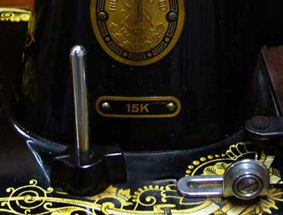
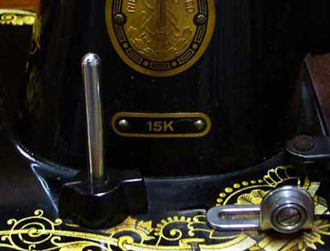
What Is A Badged Machine?
by Les Godfrey
Acknowledgements: Singer business records held by the Clydeside Library, Hudson Bay Company Heritage Site, Sincere’s History of the Sewing Machine, The NeedleBar Archives and Picture Library.
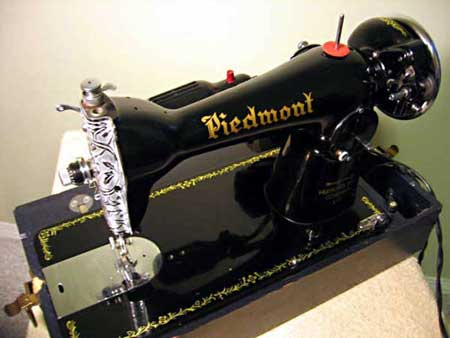
The Piedmont sewing machine is known as a badged machine, meaning the manufacturer places the chosen name of the retailer on the machine and can also include the retailer’s own name, as in this case, the Hudson’s Bay Company. It was also common to see a metal name badge screwed onto the front of the machine, quite often by the retailer when fitting motors and cases. This machine like so many other badged machines at the time was made in Asia, most likely Japan. It is comparable to a Singer 15 Class and is known as a HA1 head. It uses a CB (central bobbin) vertically mounted oscillating hook system and takes a 15x1, 705H needle. Low shank presser foot, drop feed and reverse stitch.
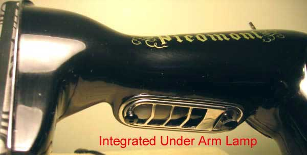
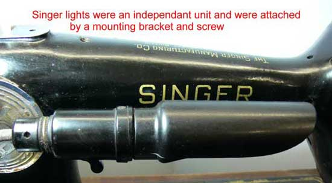
Whilst this type of machine is often referred to as a "Singer clone", this is really an unfair description. A clone is obviously a copy, but this assertion cannot be justified as improvements were incorporated into the design and were continually developed, such as a hinged rather than a slide cover plate, whereas Singer continued to use a slide plate. Some machines had an integrated sewing lamp such as the Piedmont above, this was never introduced on the Singer 15 Class machines. Other mechanical changes introduced were the Hook Retaining Ring which had two spring loaded retaining clips, making removal of the entire Ring and Hook, easier for maintenance should the Hook tangle with thread. Singer machines had a screw in type Hook Retaining Ring and didn’t incorporate their hinged style until quite some time later. A Drop Feed Knob incorporating a dual height mechanism enabling the Feed Dog to be lowered completely or set for either fine or heavy fabric. Singer took many years two introduce a similar system.
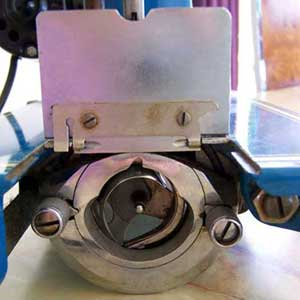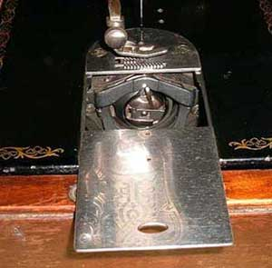
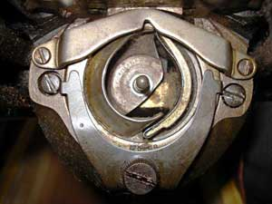
The hinged cover plate and vertical CB Oscillating Hook with the spring loaded retaining ring clips can clearly be seen in the photo to the left. Compare with the Singer slide cover plate and the screw in Hook Retaining Ring shown.
Another worthwhile improvement was the use of a spring loaded Darnamatic used to control the amount of pressure on the presser foot, pressure can be controlled by the press of a button and can also be released completely by pressing a lever or outer ring, whilst Singer continued to use an older style thumb screw.
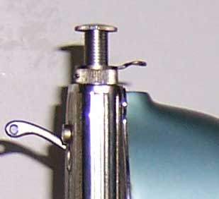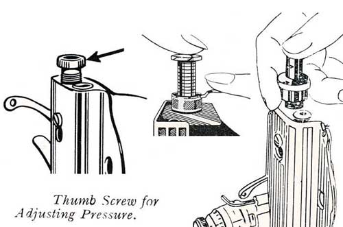
The machine on the left shows the Darnamatic control of the type used by the Piedmont example. In the centre is the Singer type thumb screw with the two styles of Darnamatic, Outer Ring and Lever over to the right. This simple improvement combined with the drop feed control gave this machine an ease of use never experienced on Singer 15 Class machines of the same period.
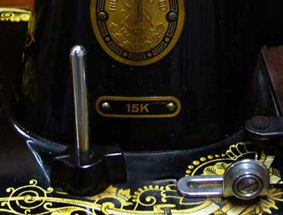
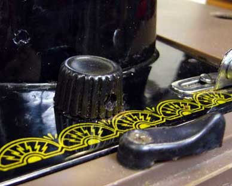
A badged machine's drop feed control is shown to the left compared withcontrols on a Singer 15K110 and a Singer 15NL.
In the early days these machines were normally exported as
heads only and were fitted with locally produced carry case, motor and foot
control, thus eliminating the need for electrical authority approval.
Badging of machines was and still is to some degree in common practice around
the world today with major companies such as Montgomery Wards and Sears Roebuck
in the US. Sears alone imported 274,000 Japanese machines in the first six months
of 1969. John Lewis (Jonelle) and Woolworths (Winfied) in the UK. David Jones,
Myer and Empisal in Australia. These companies would often buy from different
manufacturers as prices were highly competitive for large volume purchases.
This also makes identifying manufacturers of badged machines even more complicated.
Common names used at the time were Crown, Liberty, Queen and Victor, quite often
including the words Deluxe or Super Deluxe, Precision etc.
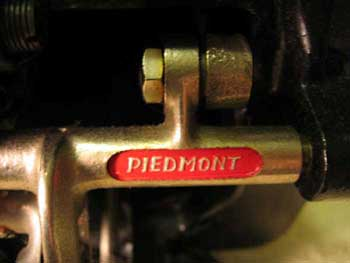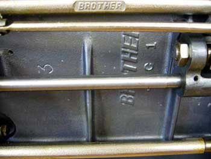
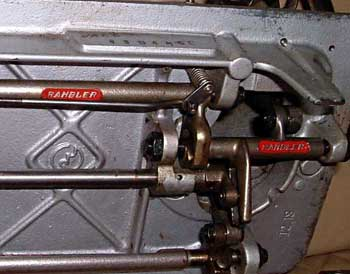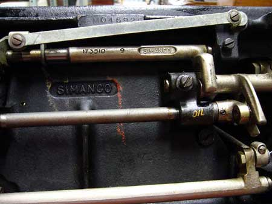
A direct comparison of the Piedmont machine and other Asian Badged Machines can clearly be seen in the above photos, lower right is a Singer machine showing the Simanco Trademark. Singer protected its trademarks vehemently, it still does to this day. Note also differences in the Bed Plates between the Asian made machines and the Singer product, the ribbing which is used for strengthening the casting is particularly obvious and can clearly be seen in these photos.
Research into Asian made machines and their respective companies is in its infancy and is only just getting underway, as yet not a great deal is known. Many different companies manufactured these machines in huge numbers over a long period of time.
For example, in the late 1950’s there were more than 300 Japanese companies involved in the industry, with 125 manufacturing sewing machines. By the end of 1969 only 25 companies were actively manufacturing machines, and accessory suppliers had likewise decreased to a handful. Yet despite the trend, production and export from Japan increased dramatically, supplying over 50% of all sewing machine sales in the USA in 1969.
Although mass produced it should be noted that these Japanese heads were extremely well built, they performed well, were very affordable and the finish was second to none. Machines came in various and some very bright colours making them very attractive to collectors of this type of machine today.
The technical improvements that these manufacturers introduced not only caused Singer to take notice but forced them to follow, eventually adding similar features themselves. These machines evolved into more modern designs, squarer in appearance, with easier to use features such as a dial type stitch length knob and push button reverse, eventually giving way to the side loading zig zag machine. This development utilised the same side loaded CB Hook system as the HA1, which was adapted enabling the entire hook race to move from left to right in time with the movement of the needle during the zig zag stitch. This development preceded the beginning of a whole new era in sewing machine technology and the eventual demise of several western manufacturers.
Whilst rumours persist that the Piedmont in particular is a re-badged Singer 15 Class machine and or having been made from Singer parts, which were supposedly purchased from the Singer factory in Kilbowie Scotland, when it closed down, this story has been seized upon and embellished by online sellers over the years, obviously it makes these machines seem more desirable and collectable, thereby generating higher prices.
To quote The Hudson’s Bay Company Heritage web site, Frequently Asked Questions.
No, we do not manufacture anything ourselves, we are strictly retailers. That being said we have for centuries retailed exclusive products manufactured to our own specifications – particularly our world-famous HBC point blankets. Over the years our house or “private” brands have included china, tobacco, tea and coffee, etc. Today they are primarily apparel and house wares.
The facts are:
1. These machines were sold long
before the Kilbowie plant closed down which was in June 1980.
2. Parts manufactured by Singer were stamped with either the SIMANCO (Singer
Manufacturing Company) trademark or the word Singer and a part number.
3. None of the Piedmont machines have been discovered with any such Singer trademark.
4. No pre-drilled holes on the front of the pillar where the Singer badge would
have been placed.
If you have purchased one of these badged machines then you have a reliable sewing machine which is well built. And in the case of our Piedmont example, it has a connection to one of the world’s oldest retailers, The Hudson’s Bay Company.
Les Godfrey © 2008